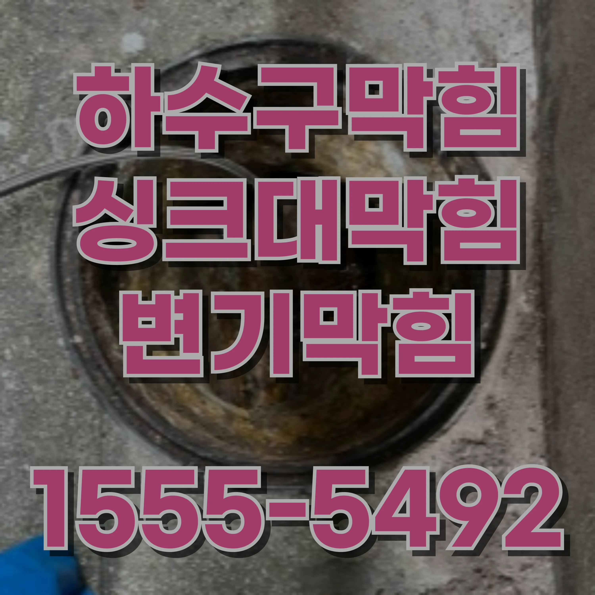
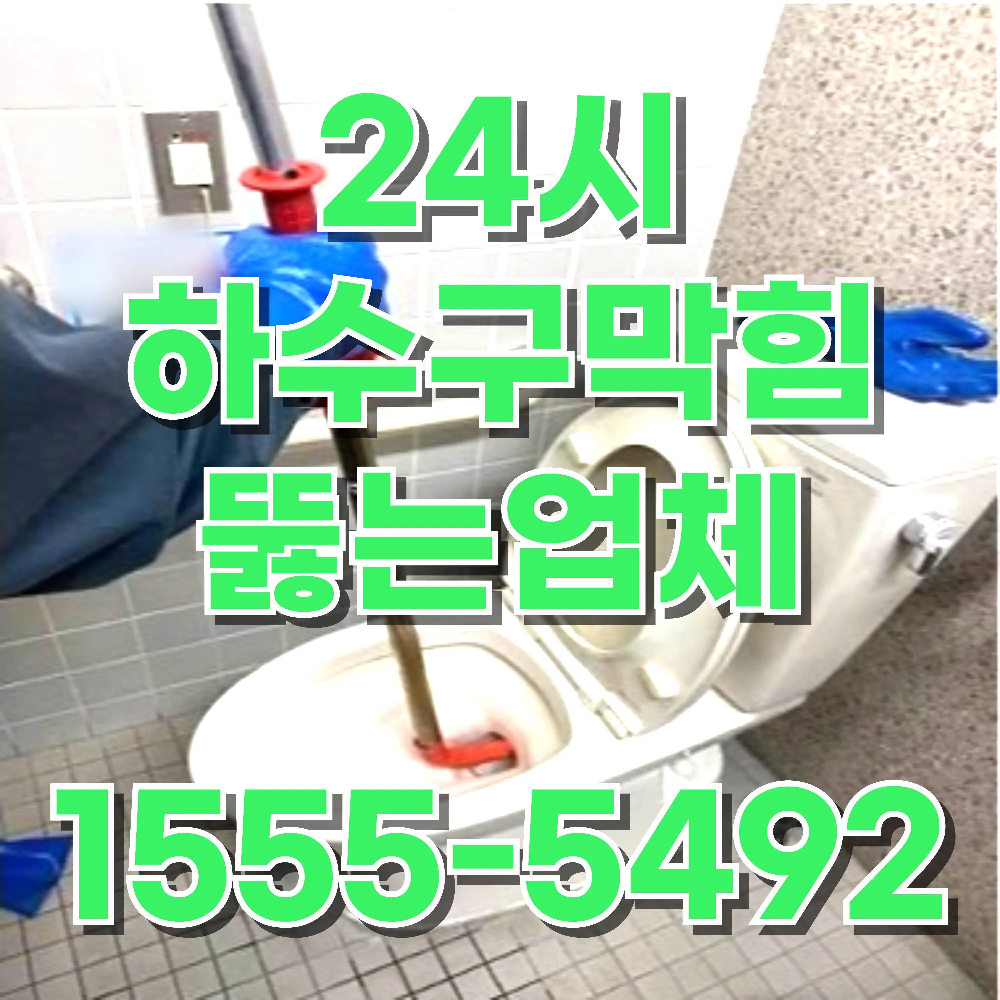
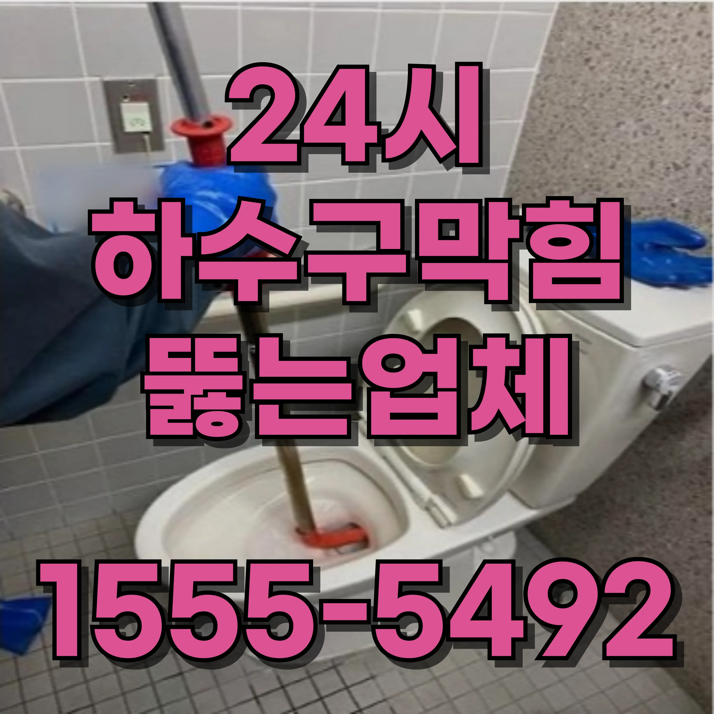

24시간 운영중
월 ~ 일

인현동1가 공용 배수관 막힘 배수구 물 넘침 뚫는 업체 추천배관이 PVC 재질이라면 너무 뜨거운 물을 사용하면 변형될 수 있으므로 70~80도 정도의 물을 사용하는 것이 좋다. 베이킹소다와 식초를 활용하는 방법도 있다. 베이킹소다는 지방을 분해하는 데 효과적이며, 식초와 만나면 거품을 발생시켜 하수구와 계량기 동파로 인한 비용 문제 하수구 막힘이나 계량기 동파는 방치할 경우 큰 비용 문제로 이어질 수 있습니다. 동파된 계량기를 교체하거나 하수구를 전문적으로 청소하는 데 드는 비용은 상당합니다. 특히 누수로 인한 구조물 손상까지 겹치면 복구 비용은 기하급수적으로 증가합니다. 이를 방지하려면 예방 조치를 철저히 하고, 문제가 발생했을 때 신속히 대처해야 합니다. 겨울철에는 보온재 사용과 정기적인 점검으로 불필요한 수리비용을 줄이는 것이 중요합니다. 해결하는 데 도움을 준다. 하수구에 베이킹소다 한 컵을 붓고 식초를 부으면 거품이 일어나면서 내부를 청소하는 효과가 있다. 약 1015분 정도 기다린 후 뜨거운 물을 부어주면 찌꺼기가 깨끗이 씻겨 내려간다. 이 방법은 화학 세제를 사용하지 않고도 하수구를 깨끗하게 관리할 수 있는 방법 중 하나다. 하수구와 언 수도의 연관성 하수구 막힘과 언 수도 문제는 서로 밀접하게 연관될 수 있습니다. 하수구가 막혀 물이 제대로 배출되지 않으면 배관 내부에 고인 물이 동결될 가능성이 높아집니다. 반대로, 언 수도로 인해 물의 흐름이 원활하지 않으면 하수구에 이물질이 쌓이기 쉬워집니다. 따라서 두 문제를 동시에 관리하는 것이 중요합니다. 정기적으로 하수구를 청소하고, 겨울철에는 배관과 하수구에 보온 조치를 취해 문제를 예방해야 합니다. 이를 통해 하수구와 수도 시스템의 안정적인 작동을 보장할 수 있습니다.
인현동1가 공용 배수관 막힘 배수구 물 넘침 뚫는 업체 추천하수구가 심하게 막혔다면 배관 청소 솔이나 배수구 클리너를 이용하여 직접 청소하는 것이 효과적이다. 특히 머리카락이 원인일 경우 배수구 트랩을 제거하고 고무장갑을 낀 후 손으로 제거하는 것이 가장 확실한 방법이다. 또한 플런저를 사용하면 압력을 이용해 인현동1가 공용 배수관 막힘 배수구 물 넘침 뚫는 업체 추천 막힌 부분을 뚫을 수 있다. 뚫어뻥을 사용할 때는 하수구에 약간의 물을 채운 상태에서 사용해야 효과가 좋다. 위아래로 여러 번 눌렀다 떼는 동작을 반복하면 압력 차이로 인해 막힌 부분이 뚫릴 수 있다. 하수구와 계량기 동파로 인한 비용 문제 하수구 막힘이나 계량기 동파는 방치할 경우 큰 비용 문제로 이어질 수 있습니다. 동파된 계량기를 교체하거나 하수구를 전문적으로 청소하는 데 드는 비용은 상당합니다. 특히 누수로 인한 구조물 손상까지 겹치면 복구 비용은 기하급수적으로 증가합니다. 이를 방지하려면 예방 조치를 철저히 하고, 문제가 발생했을 때 신속히 대처해야 합니다. 겨울철에는 보온재 사용과 정기적인 점검으로 불필요한 수리비용을 줄이는 것이 중요합니다.
인현동1가 공용 배수관 막힘 배수구 물 넘침 뚫는 업체 추천배관이 심하게 노후화되었거나 내부에 단단한 이물질이 쌓인 경우일 수 있다. 이런 경우에는 전문가의 도움을 받아 고압 세척을 하거나 배관 교체를 고려해야 한다. 하수구가 자주 막히지 않도록 예방하는 것도 중요하다. 가장 기본적인 방법은 배수구 거름망을 사용하는 것이다. 머리카락이나 음식물 찌꺼기가 직접 배관으로 흘러 들어가는 것을 방지할 수 있어 주기적인 청소 부담을 줄일 수 있다. 주방에서는 기름기를 바로 하수구에 흘려보내지 않고 따로 처리하는 것이 좋으며, 욕실에서는 샴푸나 비누 찌꺼기가 쌓이지 않도록 물을 충분히 흘려 보내는 것이 도움이 된다. 인현동1가누수탐지 또한 한 달에 한두 번 정도 베이킹소다와 식초를 이용한 청소를 하면 하수구 내부의 찌꺼기를 예방할 수 있다. 하수구 막힘은 일상에서 불편을 초래하는 문제이지만, 원인을 파악하고 적절한 방법으로 하수구와 언 수도의 연관성 하수구 막힘과 언 수도 문제는 서로 밀접하게 연관될 수 있습니다. 하수구가 막혀 물이 제대로 배출되지 않으면 배관 내부에 고인 물이 동결될 가능성이 높아집니다. 반대로, 언 수도로 인해 물의 흐름이 원활하지 않으면 하수구에 이물질이 쌓이기 쉬워집니다. 따라서 두 문제를 동시에 관리하는 것이 중요합니다. 정기적으로 하수구를 청소하고, 겨울철에는 배관과 하수구에 보온 조치를 취해 문제를 예방해야 합니다. 이를 통해 하수구와 수도 시스템의 안정적인 작동을 보장할 수 있습니다. 해결하면 쉽게 극복할 수 있다. 무엇보다 중요한 것은 막히기 전에 미리 예방하는 것이다. 배수구 거름망 사용, 기름기 제거, 주기적인 청소 습관을 들이면 하수구가 막히는 일을 최소화할 수 있다. 만약 여러 가지 방법을 시도해도 해결되지 않는다면 전문가의 도움을 받아 배관 점검을 진행하는 것이 필요하다.인현동1가누수탐지
인현동1가 공용 배수관 막힘 배수구 물 넘침 뚫는 업체 추천하수구가 막히는 문제는 일상에서 흔히 겪는 불편한 상황 중 하나다. 특히 주방과 욕실에서 물이 원활하게 빠지지 않거나, 악취가 나는 경우에는 하수구 막힘이 원인일 가능성이 높다. 이를 해결하기 위해서는 먼저 막힘의 원인을 파악하는 것이 중요하다. 인현동1가누수탐지 하수구가 막히는 주된 원인은 머리카락, 음식물 찌꺼기, 기름때, 비누 찌꺼기, 배관 노후화 등이 있다. 욕실 하수구의 경우 머리를 감을 때 빠지는 머리카락이 배수구에 쌓이면서 물이 원활하게 내려가지 않는 경우가 많다. 여기에 비누 찌꺼기나 때가 엉겨 붙으면 더욱 심각한 막힘이 발생할 수 있다. 주방 하수구는 음식물 찌꺼기와 기름때가 주요 원인이다.간단한 방법으로 해결되지 않는 하수구 막힘은 전문가의 도움이 필요합니다. 특히, 배수구에서 악취가 심하게 나거나 물이 전혀 내려가지 않는 경우, 전문가를 부르는 것이 좋습니다. 전문가들은 전문 장비와 기술을 통해 문제의 근본 원인을 찾아내고, 효과적으로 해결할 수 있습니다. 인현동1가하수구막힘 특히 기름은 물과 만나면서 굳어지기 때문에 배수관 벽에 달라붙어 점점 더 두꺼운 막을 형성한다. 처음에는 물이 천천히 내려가다가 시간이 지나면서 완전히 막히는 경우도 발생한다. 이런 경우에는 평소에 기름을 하수구에 버리지 않고 키친타월 등으로 닦아내서 버리는 것이 예방하는 데 효과적이다. 하수구가 막혔을 때는 여러 가지 방법을 활용하여 인현동1가하수구막힘 해결할 수 있다. 가장 간단한 방법은 뜨거운 물을 붓는 것이다. 특히 기름이나 비누 찌꺼기 때문에 막힌 경우에는 뜨거운 물을 천천히 흘려보내면 배관에 붙어 있는 찌꺼기가 녹아내리면서 물이 잘 내려갈 수 있다. 인현동1가 공용 배수관 막힘 배수구 물 넘침 뚫는 업체 추천
| 문제 | 예방법 | 추가 팁 |
|---|---|---|
| 인현동1가변기막힘 | 인현동1가변기막힘 생리대와 물티슈를 변기에 버리지 마세요. | 화장지를 필요한 만큼만 사용하여 막힘을 방지하세요. |
| 인현동1가싱크대막힘 | 인현동1가싱크대막힘 기름이나 기름기를 싱크대에 버리지 말고 종이타월로 닦아내세요. | 거름망을 사용하여 음식물 찌꺼기가 배수구로 들어가지 않게 하세요. |
| 인현동1가하수구막힘 | 인현동1가하수구막힘머리카락 필터를 설치하고 사용 후 정기적으로 청소하세요. | 배수구에 뜨거운 물을 한 달에 한 번 부어 비누 찌꺼기를 제거하세요. |
| 변기막힘 | 싱크대막힘 | 하수구막힘 |
|---|---|---|
| 무교동 변기막힘 | 무교동 싱크대막힘 | 무교동 하수구막힘 |
| 다동 변기막힘 | 다동 싱크대막힘 | 다동 하수구막힘 |
| 태평로1가 변기막힘 | 태평로1가 싱크대막힘 | 태평로1가 하수구막힘 |
| 을지로1가 변기막힘 | 을지로1가 싱크대막힘 | 을지로1가 하수구막힘 |
| 을지로2가 변기막힘 | 을지로2가 싱크대막힘 | 을지로2가 하수구막힘 |
| 남대문로1가 변기막힘 | 남대문로1가 싱크대막힘 | 남대문로1가 하수구막힘 |
| 삼각동 변기막힘 | 삼각동 싱크대막힘 | 삼각동 하수구막힘 |
| 수하동 변기막힘 | 수하동 싱크대막힘 | 수하동 하수구막힘 |
| 장교동 변기막힘 | 장교동 싱크대막힘 | 장교동 하수구막힘 |
| 수표동 변기막힘 | 수표동 싱크대막힘 | 수표동 하수구막힘 |
| 소공동 변기막힘 | 소공동 싱크대막힘 | 소공동 하수구막힘 |
| 남창동 변기막힘 | 남창동 싱크대막힘 | 남창동 하수구막힘 |
| 북창동 변기막힘 | 북창동 싱크대막힘 | 북창동 하수구막힘 |
| 태평로2가 변기막힘 | 태평로2가 싱크대막힘 | 태평로2가 하수구막힘 |
| 남대문로2가 변기막힘 | 남대문로2가 싱크대막힘 | 남대문로2가 하수구막힘 |
| 남대문로3가 변기막힘 | 남대문로3가 싱크대막힘 | 남대문로3가 하수구막힘 |
| 남대문로4가 변기막힘 | 남대문로4가 싱크대막힘 | 남대문로4가 하수구막힘 |
| 남대문로5가 변기막힘 | 남대문로5가 싱크대막힘 | 남대문로5가 하수구막힘 |
| 봉래동1가 변기막힘 | 봉래동1가 싱크대막힘 | 봉래동1가 하수구막힘 |
| 봉래동2가 변기막힘 | 봉래동2가 싱크대막힘 | 봉래동2가 하수구막힘 |
| 회현동1가 변기막힘 | 회현동1가 싱크대막힘 | 회현동1가 하수구막힘 |
| 회현동2가 변기막힘 | 회현동2가 싱크대막힘 | 회현동2가 하수구막힘 |
| 회현동3가 변기막힘 | 회현동3가 싱크대막힘 | 회현동3가 하수구막힘 |
| 충무로1가 변기막힘 | 충무로1가 싱크대막힘 | 충무로1가 하수구막힘 |
| 충무로2가 변기막힘 | 충무로2가 싱크대막힘 | 충무로2가 하수구막힘 |
| 명동1가 변기막힘 | 명동1가 싱크대막힘 | 명동1가 하수구막힘 |
| 명동2가 변기막힘 | 명동2가 싱크대막힘 | 명동2가 하수구막힘 |
| 남산동1가 변기막힘 | 남산동1가 싱크대막힘 | 남산동1가 하수구막힘 |
| 남산동2가 변기막힘 | 남산동2가 싱크대막힘 | 남산동2가 하수구막힘 |
| 남산동3가 변기막힘 | 남산동3가 싱크대막힘 | 남산동3가 하수구막힘 |
| 저동1가 변기막힘 | 저동1가 싱크대막힘 | 저동1가 하수구막힘 |
| 충무로4가 변기막힘 | 충무로4가 싱크대막힘 | 충무로4가 하수구막힘 |
| 충무로5가 변기막힘 | 충무로5가 싱크대막힘 | 충무로5가 하수구막힘 |
| 인현동2가 변기막힘 | 인현동2가 싱크대막힘 | 인현동2가 하수구막힘 |
| 예관동 변기막힘 | 예관동 싱크대막힘 | 예관동 하수구막힘 |
| 묵정동 변기막힘 | 묵정동 싱크대막힘 | 묵정동 하수구막힘 |
| 필동1가 변기막힘 | 필동1가 싱크대막힘 | 필동1가 하수구막힘 |
| 필동2가 변기막힘 | 필동2가 싱크대막힘 | 필동2가 하수구막힘 |
| 필동3가 변기막힘 | 필동3가 싱크대막힘 | 필동3가 하수구막힘 |
| 남학동 변기막힘 | 남학동 싱크대막힘 | 남학동 하수구막힘 |
| 주자동 변기막힘 | 주자동 싱크대막힘 | 주자동 하수구막힘 |
| 예장동 변기막힘 | 예장동 싱크대막힘 | 예장동 하수구막힘 |
| 장충동1가 변기막힘 | 장충동1가 싱크대막힘 | 장충동1가 하수구막힘 |
| 장충동2가 변기막힘 | 장충동2가 싱크대막힘 | 장충동2가 하수구막힘 |
| 광희동1가 변기막힘 | 광희동1가 싱크대막힘 | 광희동1가 하수구막힘 |
| 광희동2가 변기막힘 | 광희동2가 싱크대막힘 | 광희동2가 하수구막힘 |
| 쌍림동 변기막힘 | 쌍림동 싱크대막힘 | 쌍림동 하수구막힘 |
| 을지로6가 변기막힘 | 을지로6가 싱크대막힘 | 을지로6가 하수구막힘 |
| 을지로7가 변기막힘 | 을지로7가 싱크대막힘 | 을지로7가 하수구막힘 |
| 을지로4가 변기막힘 | 을지로4가 싱크대막힘 | 을지로4가 하수구막힘 |
| 을지로5가 변기막힘 | 을지로5가 싱크대막힘 | 을지로5가 하수구막힘 |
| 주교동 변기막힘 | 주교동 싱크대막힘 | 주교동 하수구막힘 |
| 방산동 변기막힘 | 방산동 싱크대막힘 | 방산동 하수구막힘 |
| 오장동 변기막힘 | 오장동 싱크대막힘 | 오장동 하수구막힘 |
| 을지로3가 변기막힘 | 을지로3가 싱크대막힘 | 을지로3가 하수구막힘 |
| 입정동 변기막힘 | 입정동 싱크대막힘 | 입정동 하수구막힘 |
| 산림동 변기막힘 | 산림동 싱크대막힘 | 산림동 하수구막힘 |
| 충무로3가 변기막힘 | 충무로3가 싱크대막힘 | 충무로3가 하수구막힘 |
| 초동 변기막힘 | 초동 싱크대막힘 | 초동 하수구막힘 |
| 인현동1가 변기막힘 | 인현동1가 싱크대막힘 | 인현동1가 하수구막힘 |
| 저동2가 변기막힘 | 저동2가 싱크대막힘 | 저동2가 하수구막힘 |
| 신당동 변기막힘 | 신당동 싱크대막힘 | 신당동 하수구막힘 |
| 흥인동 변기막힘 | 흥인동 싱크대막힘 | 흥인동 하수구막힘 |
| 무학동 변기막힘 | 무학동 싱크대막힘 | 무학동 하수구막힘 |
| 황학동 변기막힘 | 황학동 싱크대막힘 | 황학동 하수구막힘 |
| 서소문동 변기막힘 | 서소문동 싱크대막힘 | 서소문동 하수구막힘 |
| 정동 변기막힘 | 정동 싱크대막힘 | 정동 하수구막힘 |
| 순화동 변기막힘 | 순화동 싱크대막힘 | 순화동 하수구막힘 |
| 의주로1가 변기막힘 | 의주로1가 싱크대막힘 | 의주로1가 하수구막힘 |
| 충정로1가 변기막힘 | 충정로1가 싱크대막힘 | 충정로1가 하수구막힘 |
| 중림동 변기막힘 | 중림동 싱크대막힘 | 중림동 하수구막힘 |
| 의주로2가 변기막힘 | 의주로2가 싱크대막힘 | 의주로2가 하수구막힘 |
| 만리동1가 변기막힘 | 만리동1가 싱크대막힘 | 만리동1가 하수구막힘 |
| 만리동2가 변기막힘 | 만리동2가 싱크대막힘 | 만리동2가 하수구막힘 |
| 회현동 변기막힘 | 회현동 싱크대막힘 | 회현동 하수구막힘 |
| 명동 변기막힘 | 명동 싱크대막힘 | 명동 하수구막힘 |
| 필동 변기막힘 | 필동 싱크대막힘 | 필동 하수구막힘 |
| 장충동 변기막힘 | 장충동 싱크대막힘 | 장충동 하수구막힘 |
| 광희동 변기막힘 | 광희동 싱크대막힘 | 광희동 하수구막힘 |
| 을지로동 변기막힘 | 을지로동 싱크대막힘 | 을지로동 하수구막힘 |
| 다산동 변기막힘 | 다산동 싱크대막힘 | 다산동 하수구막힘 |
| 약수동 변기막힘 | 약수동 싱크대막힘 | 약수동 하수구막힘 |
| 청구동 변기막힘 | 청구동 싱크대막힘 | 청구동 하수구막힘 |
| 신당5동 변기막힘 | 신당5동 싱크대막힘 | 신당5동 하수구막힘 |
| 동화동 변기막힘 | 동화동 싱크대막힘 | 동화동 하수구막힘 |